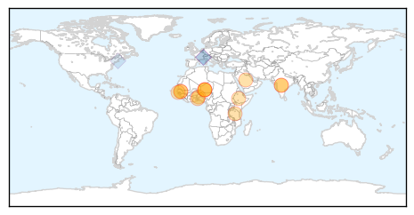
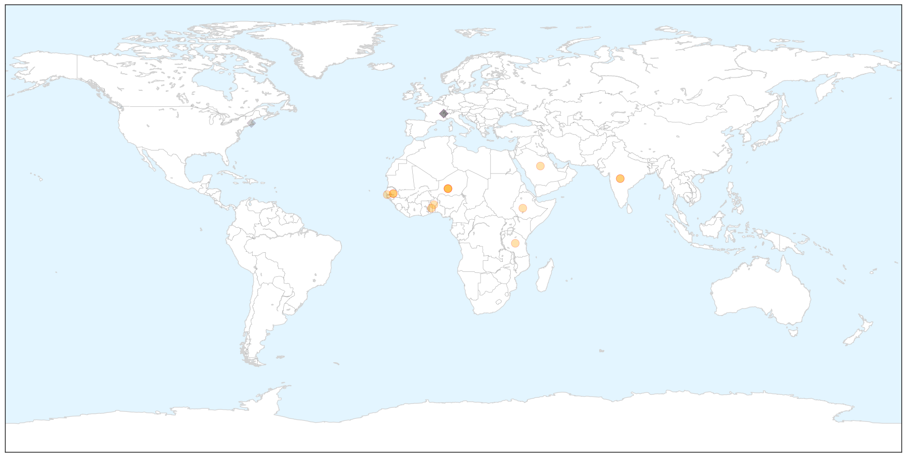
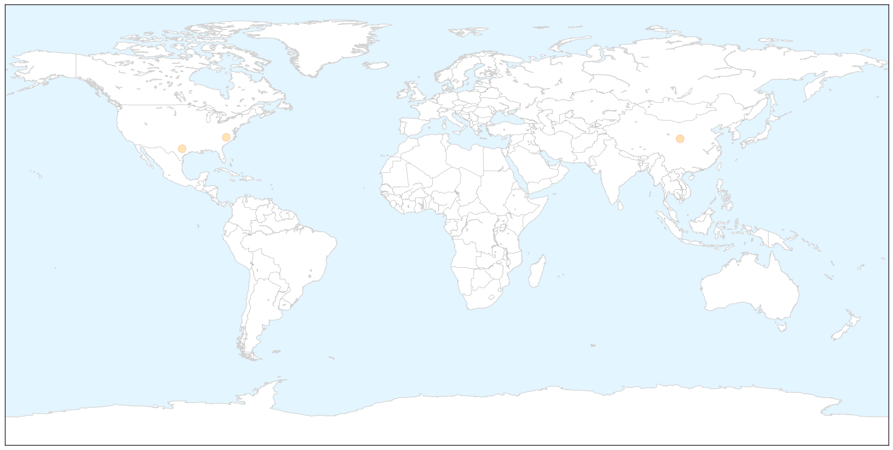

Meningitis
30-Day Web Trend
1 alerts, 0 warnings

30-Day Twitter Trend
6 alerts, 0 warnings

Article Locations

X

Article Confidences

Top Articles:
- 0.994
- New SARS-like Virus Detected in Middle East
- 0.987
- Meningitis jab in Africa a 'stunning success'
- 0.984
- Affordable and effective vaccine brings Africa close to elimination of meningitis A
- 0.983
- Scientists mark 'stunning success' of vaccine in virtually ridding Africa of meningitis A
- 0.981
- Meningitis Has Been Virtually Eradicated In Africa
- 0.979
- WHO urges routine meningitis vaccine to avoid resurgence in Africa
- 0.977
- Huge gains on meningitis A in Africa could be under threat, warns WHO
- 0.971
- New meningitis strains could thrive following vaccine success
- 0.966
- MRF Hails Fantastic African Meningitis Vaccination Programme Which Saves Thousands of Lives
- 0.941
- Deadly meningitis strain virtually eliminated in much of Africa - study
- 0.923
- Indian vaccine for meningitis hailed in Africa
- 0.923
- Indian vaccine for meningitis hailed in Africa
- 0.919
- World Tuberculosis Day 2015 How dangerous is tuberculosis (TB) disease Prevention, Diagnose, Treatment
Top Tweets:
- 0.779
- In 2013 only 4 laboratory-confirmed cases of meningitis A were reported by the 26 countries in the African "meningitis belt" VaccinesWork
- 0.588
- The meningitis A vaccine for Africa MenAfriVac was developed in response to an outbreak in 1996 which infected >250k ppl in a few months
- 0.558
- Meningitis vaccine developed to battle strain found only in Africa's meningitis belt has been a spectacular success. https://t.co/ZQdxrYuEaz
MERS
30-Day Web Trend
0 alerts, 0 warnings

30-Day Twitter Trend
8 alerts, 0 warnings

Article Locations

X

Article Confidences

Top Articles:
Top Tweets:
-
No tweets found for Nov 10, 2015